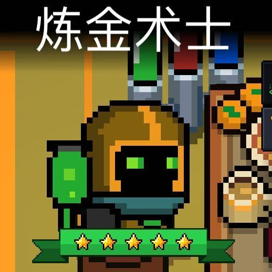

钢琴
钢琴是陪了我很多年的老朋友。不是为了比赛练琴的时候，琴声是最能让人安静下来的东西。琴键按下去的瞬间，那些乱糟糟的情绪和身体上的不适感，好像都能暂时被隔开，我可以在音乐里躲一会儿。

ZYC's PROFILE
慢热、社恐，带着一点恶趣味在世界里晃荡，随波逐流，也在找自己的岸。
大家好，我是周雨辰，朋友也叫我Goose。身高175，现在在大连市第五中学读高二。性格偏慢热，刚认识的时候话很少，熟了之后会冒出些奇奇怪怪的恶趣味，反应总是比别人慢半拍。
因为身体原因，几乎没法参加足球篮球这类剧烈对抗运动，日常的活动范围多在琴房、画桌前，或是窝在座位上追番。以前会做衍纸，现在手艺已经差不多忘光了；养过的植物基本都被我养死，唯一自认的长处大概是可以当合格的衣架。
听歌偏爱流行和city pop，现在歌单里循环最多的是《東京フラッシュ》。动漫里最喜欢《石纪元》和《全职猎人》，还有看了很多遍的《驯龙高手》系列；喜欢的角色是石神千空和娜薇娅。收集周边是藏了很久的小爱好，课桌抽屉里塞了不少小玩意儿。
饮食上很喜欢摩卡、生菜和生胡萝卜，完全接受不了苦瓜、豆角和木耳。最反感浮夸装模作样的人，比起热闹的场合，更愿意和合得来的朋友安静待着。现在总觉得心里空落落的，很想养一只宠物，也盼着能遇到一位心态平和的语文老师。我的人生格言很简单：随波逐流。
“随波逐流不是没主见，是先不跟世界较劲。”
钢琴是陪了我很多年的老朋友。不是为了比赛练琴的时候，琴声是最能让人安静下来的东西。琴键按下去的瞬间，那些乱糟糟的情绪和身体上的不适感，好像都能暂时被隔开，我可以在音乐里躲一会儿。
从小学开始就泡在动漫里，《石纪元》里千空的冷静和倔强，《全职猎人》里奇奇怪怪的冒险，还有看了无数遍的《驯龙高手》，都是我课余时间的精神出口。非常不喜欢《我的英雄学院》，提到就会皱眉。收集喜欢的角色周边是小乐趣，每拿到一个就会在桌上摆好。
出门坐公交的时候一定会戴耳机，歌单里翻来覆去放最多的是city pop，《東京フラッシュ》已经循环了快半年。完全接受不了怪异的小语种音乐，听到就会下意识切歌。音乐是我在人群里给自己建的小隔间，戴着耳机就可以不用和外界打交道。
会衍纸，现在已经忘得差不多了；养什么植物都活不过一个月，人称“植物杀手”；喜欢吃生胡萝卜和生菜，配摩卡是固定搭配。运动细胞不算发达，乒乓球是少数能玩得转的项目，跑步是从初中就留下的心理阴影。
2010年2月19日出生，在大连的冬天里长到能跑能跳的年纪。幼儿园时候还没显出社恐的性子，跟着大人到处跑，2016年背上书包进了79附小，正式开始小学生活。那时候还不知道后面会遇到那么多和身体有关的难题。
2018年入选学校乒乓球校队，是少数能在运动场上找到一点自信的时刻。2019年跟着家人去日本大阪旅游，在大阪街头被爸爸哄着尝了一口烧酒，辣得直皱眉的味道到现在都记得。那是第一次走出国门，看到完全不一样的街道和口音。
这一年被确诊骨纤维异常增殖症，做了穿刺手术，身体开始出问题，很多之前能随便做的运动都变得受限。也是在同一年，抱着试试看的心态参加人工智能赛事，最后拿了区第二、市一等奖，是意外之喜。病痛和奖状撞在同一年，现在想起来还是有点恍惚。
2021年右股骨做了一次大手术，术后贫血了很久，也从小学升入了47中。刚丢掉拐杖没多久，就被要求跟着全班一起跑步，800米的成绩差到自己都不好意思说。好在初中遇到了几个合得来的朋友，一起扛过了很多不公平的时刻；也是那段时间落下了肠炎的毛病，很多想吃的东西都碰不了。
一点点做康复训练，慢慢把身体养回来，1000米成绩跑到了4分20秒，是以前想都不敢想的速度。期末考也考到了年级第八，是整个初中阶段最好的一次成绩。那时候以为一切都在往好的方向走，对中考和高中还抱着很多期待。
体育中考拿了满分，是练了很久才换回来的结果；但整体中考发挥失常，最后进了大连市第五中学。很长一段时间都陷在情绪低谷里，觉得之前的努力好像都打了水漂，对新学校和新阶段提不起太多劲。
这一年分到了4班，和好几位老师都闹过矛盾。现在的状态还是有点迷茫，心里空落落的，不知道以后要往哪走。嘴上说着“随波逐流”，心里还是盼着能遇到一个心态平和的语文老师，也盼着能养一只属于自己的宠物，在乱糟糟的生活里找一点软乎乎的盼头。